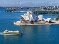

Sydney

Introdução
Localização
Multimédia
Informação
Quizz
Comentários
Home
Multimédia
Sydney Opera House e Sydney Harbour Bridge:

Opera de Sydney [1]
 Ponte Harbour Bridge de Sydney [2]
Ponte Harbour Bridge de Sydney [2]
Sydney Is City Of Beauty
Basim Alansari
Sydney is city of beauty
Surrounded by many trees
It's not just a cuttie
Breathing lovely breeze
Sydney is beyond a town
It's full of life and spirit
For fun it's a crown
Serves its every resident